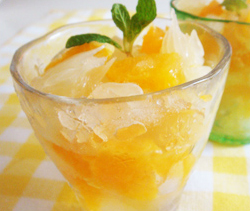

シトラスとはちみつミントゼリー＆グラニテ
- 調理時間：120 分
- （一人当たり）
- カロリー：64kcal
- たんぱく質：1.8g
- 脂質：0.1g
- 塩分：0g


＜４人分＞
- デコポン、グレープフルーツ、オレンジなどの柑橘類
- 合わせて
３００ｇ位 - 白ワイン
- ５０ｍｌ
- 水
- ３５０ｍｌ
- はちみつ
- 大さじ４～５
- ミント
- １０ｇ
- レモン汁
- 少々
- ゼラチン
- ５ｇ


- 柑橘類は皮をむいて、食べやすい大きさに切っておく。
- 鍋に、水、白ワイン、はちみつ、ミント、レモン汁を加えて煮立たせ、アルコールを飛ばして、ミントの香りを引き出す。
- 火を止め、ミントを取り出し、水にもどしたゼラチンを加えて、溶かす。
- １５０ml程度は容器に移し（グラニテ用）、冷凍庫に入れる。
残りはバットに移して冷蔵庫で冷やし固める。 - 冷凍庫に入れたゼリー液は、固まりかけたら混ぜる作業を２～３回繰り返す。
- グラスに柑橘類、固まったゼリー、グラニテを交互に盛り、仕上げにミントを飾る。
シトラスとはちみつミントゼリー＆グラニテ
季節の変わり目は体調を崩しやすいため、気のめぐりをよくする食べものが良いとされています。気のめぐりをよくする食べものの一つに、香りの食材があげられます。今回は、フレッシュミントの清涼感と蜂蜜の香りのゼリー＆グラニテです。食べるとふわーっとミントの香りが広がる、さわやかなゼリーをお楽しみください。
また、旬の柑橘類はお好みのものを合わせましょう。紫外線が強くなり始めるこの季節は、ビタミンCの補給も大切です。ゼラチンには、コラーゲンも含まれますので、ビタミンCとの食べ合わせはバッチリです。